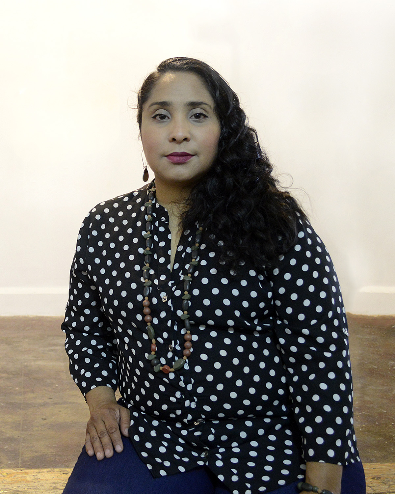

FOTOGRAFÍA PARA CONVERSAR
¿QUÉ ES?
Fotografía para conversar es un ciclo de conferencias que se realiza por tercer año consecutivo en el estado de Tlaxcala. Es una iniciativa del proyecto independiente Laboratorio de Arte y Fotografía (LafO), que dirigen Carol Espíndola y Guillermo Serrano.
Fotógrafa y ensayista. Es egresada del Seminario de Fotografía Contemporánea 2014 del Centro de la Imagen y el CaSa y del Programa de Formación Fotoensayo del FRCyA ZC (2010). Ganadora del Premio de Ensayo 2016 “Emmanuel Carballo” convocado por el Gobierno delEstado de Tlaxcala. Finalista en el 2o Concurso Internacional de Fotografía San José Foto 2016 (Uruguay). Seleccionada para el Visionado de Portafolios Trasatlántica-Photoespaña 2016. Seleccionada en el Festival Paraty em Foco 2015 (Brasil). Becaria de Jóvenes Creadores del Fondo Nacional para la Cultura y las Artes (FONCA) 2015-2016. Obtuvo el Premio Tlaxcala de Artes Visuales en 2014 y en 2005. Recientemente participó en las exposiciones The Family of No Man (Les Rencontres de la photographie d’Arles, 2018), Exposed/Expuesta (The Ligth Factory, Charlotte, NC, E.U.) Vitamina A, en la Biblioteca Vasconcelos (Cd. de México, 2017) y Todo por ver en el FotomuseoCuatrocaminos (Cd. de México, 2016). Su obra ha sido publicada en revistas como Tierra Adentro, Picnic y en la plataforma CREATORS de Vice.
Escribe la columna columna de fotografía Pese a todo, desde 2015. Ha participado como ponente en espacios como el Centro de la Imagen (Ciudad de México) y en el Encuentro Nacional de Fototecas del INAH (Pachuca, Hidalgo.). Su obra pertenece al acervo de la galería The Ligth Factory (E.U.) Museo de Arte de Tlaxcala, al Centro de Investigación y Documentación de las Artes Visuales de Tlaxcala (México) y a colecciones particulares como las de Allen Blevins, Ery Camara y Cristina de Middel.
Fotógrafa y ensayista. Es egresada del Seminario de Fotografía Contemporánea 2014 del Centro de la Imagen y el CaSa y del Programa de Formación Fotoensayo del FRCyA ZC (2010). Ganadora del Premio de Ensayo 2016 “Emmanuel Carballo” convocado por el Gobierno delEstado de Tlaxcala. Finalista en el 2o Concurso Internacional de Fotografía San José Foto 2016 (Uruguay). Seleccionada para el Visionado de Portafolios Trasatlántica-Photoespaña 2016. Seleccionada en el Festival Paraty em Foco 2015 (Brasil). Becaria de Jóvenes Creadores del Fondo Nacional para la Cultura y las Artes (FONCA) 2015-2016. Obtuvo el Premio Tlaxcala de Artes Visuales en 2014 y en 2005. Recientemente participó en las exposiciones The Family of No Man (Les Rencontres de la photographie d’Arles, 2018), Exposed/Expuesta (The Ligth Factory, Charlotte, NC, E.U.) Vitamina A, en la Biblioteca Vasconcelos (Cd. de México, 2017) y Todo por ver en el FotomuseoCuatrocaminos (Cd. de México, 2016). Su obra ha sido publicada en revistas como Tierra Adentro, Picnic y en la plataforma CREATORS de Vice.
Escribe la columna columna de fotografía Pese a todo, desde 2015. Ha participado como ponente en espacios como el Centro de la Imagen (Ciudad de México) y en el Encuentro Nacional de Fototecas del INAH (Pachuca, Hidalgo.). Su obra pertenece al acervo de la galería The Ligth Factory (E.U.) Museo de Arte de Tlaxcala, al Centro de Investigación y Documentación de las Artes Visuales de Tlaxcala (México) y a colecciones particulares como las de Allen Blevins, Ery Camara y Cristina de Middel.